Let's see what I'm working on
Start scrolling!Butuh beberapa resource untuk menginstall wordpress di ubuntu server
Install Server Di Virtual Mechine
Packet Yang Perlu di Install Di Server Ubuntu
Command line;
sudo apt install apache2
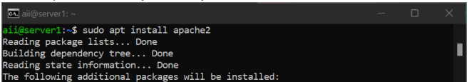
Command line;
sudo ufw allow in apache2
or
sudo ufw allow 80
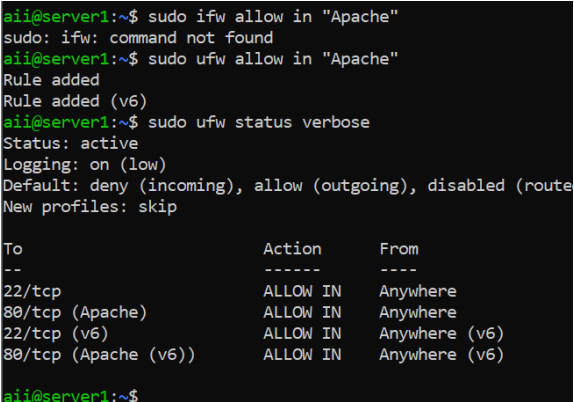
Command line;
sudo apt install mysql-server
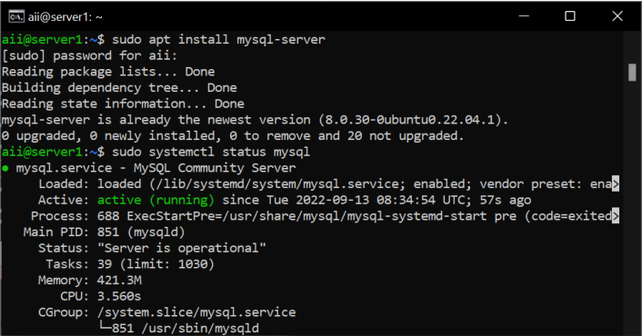
Command line;
sudo systemctl status mysql
Command line;
sudo apt install php libapache2-mod-php php-mysql
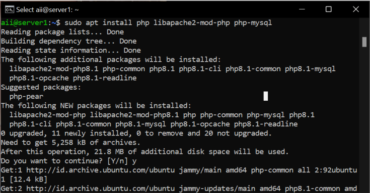
Command line;
sudo apt install php-curl php-gd php-mbstring php-xml php-xmlrpc php-soap php-intl php-zip
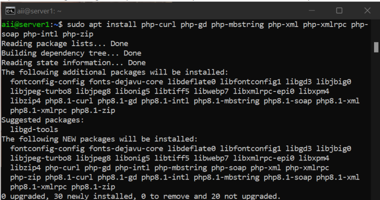
Command line;
curl https://wordpress.org/latest.zip
Command line;
unzip {nama file wordpress nya}
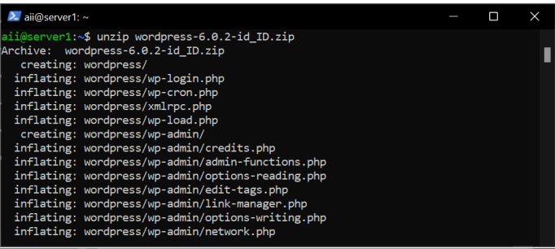
Command line;
mv {nama folder yang sudah di extrak} /var/www/html
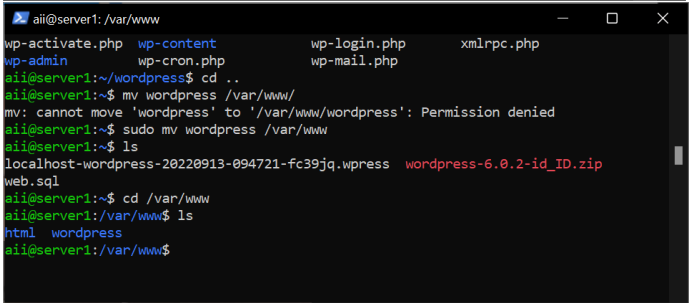
Kita perlu untuk mengubah permissions dari folder wordpressnya
Command line;
sudo chown -R USER$USER /var/www/html/wordpress
Seting Host Untuk Menjalankan Wordpress
Buat File Konfigurasi Baru
Command line;
sudo nano /etc/apache2/site-availabel/wordpress.conf
Masukkan Configurasi Berikut
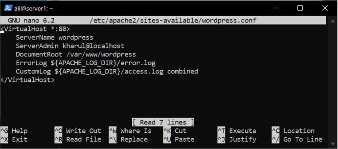
Disable 2site default apache2
Command line;
sudo a2dissite 000-default
Enable configurasi yang sudah kita buat tadi
Command line;
sudo a2ensite wordpress
Simpan perubahan dengan me-restart service apache2
Command line;
systemctl reload apache2
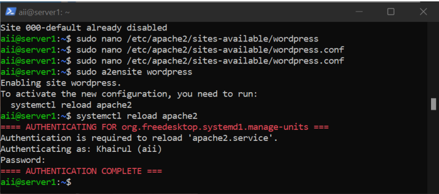
Database diperlukan untuk menyimpan file configurasi wordpress dan data user
Masuk ke Mysql
Command line;
sudo mysql
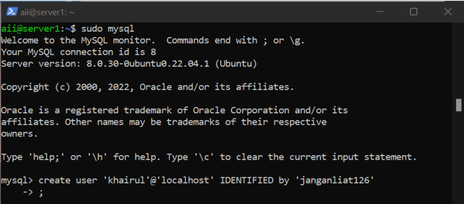
Buat User & Berikan Hak Istimewa Pada User Tersebut
Command line;
CREATE USER 'user'@'host' IDENTIFIED BY 'password';
Buat Hak Istimewa Pada User
Command line;
GRANT ALL PRIVILEGES ON *.* to 'user'@'host';
Tetapkan Privileges Secara Permanen
Command line;
FLUSH PRIVILEGES
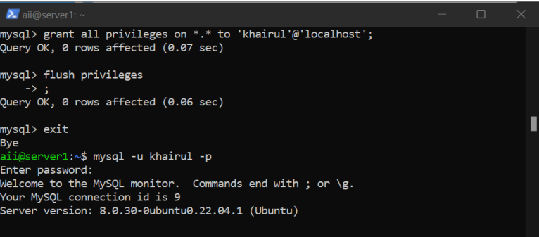
Aktifkan Penulisan Ulang
command line;
sudo a2endmod rewire
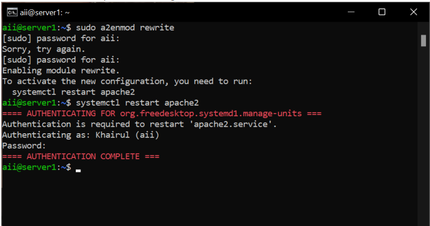
Jika Sudah Melakukan Semua Step di atas, selanjutnya lakukan penginstallan wordpress nya di web browser,
dengan mengetikkan
http://{ip_server}
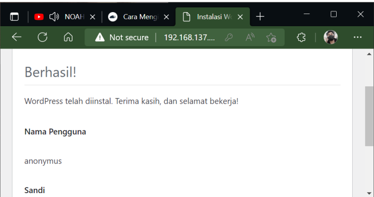